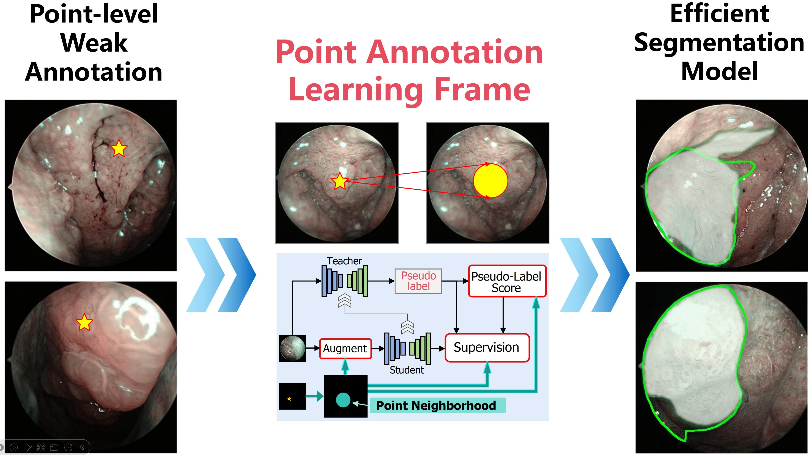
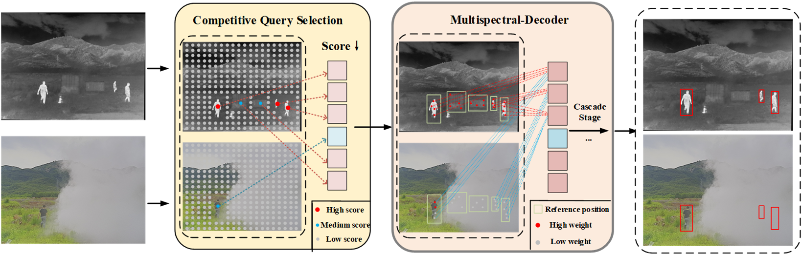
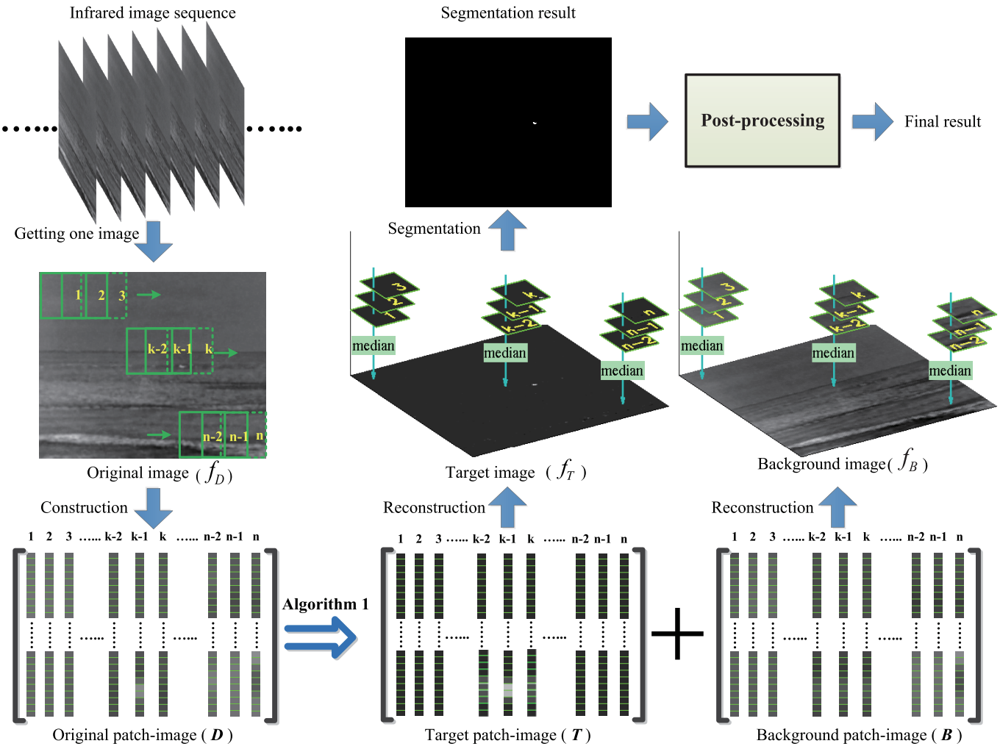

Selected Publications & Systems
This page includes peer-reviewed publications (CVPR / ECCV / NeurIPS / TMI / TIP, etc.), and also real deployed systems or algorithms we built for production environments, even if they are not yet in a formal paper.

A Point-Neighborhood Learning Framework for Nasal Endoscope Image Segmentation
Pengyu Jie, Wanquan Liu, Chenqiang Gao*, Yihui Wen, Rui He, Pengcheng Li, Jintao Zhang, Deyu Meng
IEEE Transactions on Circuits and Systems for Video Technology (TCSVT), 2025
[paper]
Towards Student Actions in Classroom Scenes: New Dataset and Baseline
Zhuolin Tan, Chenqiang Gao*, Anyong Qin*, Ruixin Chen, Tiecheng Song, Feng Yang, Deyu Meng
IEEE Transactions on Multimedia (TMM), 2025
[paper]
[code & dataset]
GuassianHand: Learning Interaction-aware 3D Gaussian Splatting for One-shot Hand Avatars
Xuan Huang, Hanhui Li, Wanquan Liu, Xiaodan Liang, Yiqiang Yan, Yuhao Cheng, Chenqiang Gao
Neural Information Processing Systems (NeurIPS), 2024
[arXiv]
[code]
Infmae: A foundation model in infrared modality
Fangcen Liu, Chenqiang Gao*, Yaming Zhang, Junjie Guo, Jinhao Wang, Deyu Meng
European Conference on Computer Vision (ECCV), 2024
[arXiv]
[code]

DAMSDet: Dynamic Adaptive Multispectral Detection Transformer with Competitive Query Selection and Adaptive Feature Fusion
Junjie Guo, Chenqiang Gao*, Fangcen Liu, Deyu Meng, Xinbo Gao
European Conference on Computer Vision (ECCV), 2024
[arXiv]
[code]
Spatial Prior-Guided Tooth Instance Segmentation with Bi-Directional Cross Attention Transformers
Pengcheng Li, Chenqiang Gao*, Chunfeng Lian, Deyu Meng
IEEE Transactions on Medical Imaging (TMI), 2024
[paper]
[code]
Few-Shot Learning with Prototype Rectification for Cross-Domain Hyperspectral Image Classification
Anyong Qin, Chaoqi Yuan, Qiang Li, Xiaoliu Luo, Feng Yang, Tiecheng Song, Chenqiang Gao
IEEE Transactions on Geoscience and Remote Sensing (TGRS), 2024
[paper]
Exploring Hybrid Contrastive Learning and Scene-to-Label Information for Multilabel Remote Sensing Image Classification
Tiecheng Song, Shufen Bai, Feng Yang, Chenqiang Gao, Haonan Chen, Jun Li
IEEE Transactions on Geoscience and Remote Sensing (TGRS), 2024
[paper]
Joint Classification of Hyperspectral and LiDAR Data Using Height Information Guided Hierarchical Fusion-and-Separation Network
Tiecheng Song, Zheng Zeng, Chenqiang Gao, Haonan Chen, Jun Li
IEEE Transactions on Geoscience and Remote Sensing (TGRS), 2024
[paper]
Deep Updated Subspace Networks for Few-Shot Remote Sensing Scene Classification
Anyong Qin, Fuyang Chen, Qiang Li, Lingyun Tang, Feng Yang, Yue Zhao, Chenqiang Gao
IEEE Transactions on Geoscience and Remote Sensing (TGRS), 2024
[paper]
Hierarchical Supervision and Shuffle Data Augmentation for 3D Semi-Supervised Object Detection
Chuandong Liu, Chenqiang Gao*, Fangcen Liu, Pengcheng Li, Deyu Meng, Xinbo Gao
IEEE/CVF Conference on Computer Vision and Pattern Recognition (CVPR), 2023
[arXiv]
[code]
THISNet: Tooth Instance Segmentation on 3D Dental Models via Highlighting Tooth Regions
Pengcheng Li, Chenqiang Gao*, Fangcen Liu, Deyu Meng, Yan Yan
IEEE Transactions on Circuits and Systems for Video Technology (TCSVT), 2023
[paper]
[code]
Distance constraint-based generative adversarial networks for hyperspectral image classification
Anyong Qin, Zhuolin Tan, Ran Wang, Yongqing Sun, Feng Yang, Yue Zhao, Chenqiang Gao
IEEE Transactions on Geoscience and Remote Sensing (TGRS), 2023
[paper]
SS3D: Sparsely-Supervised 3D Object Detection from Point Cloud
Chuandong Liu, Chenqiang Gao*, Fangcen Liu, Jiang Liu, Deyu Meng, Xinbo Gao
IEEE/CVF Conference on Computer Vision and Pattern Recognition (CVPR), 2022
[paper]
[code]
Semantic Graph Attention With Explicit Anatomical Association Modeling for Tooth Segmentation From CBCT Images
Pengcheng Li, Yang Liu, Zhiming Cui, Feng Yang, Yue Zhao, Chunfeng Lian, Chenqiang Gao
IEEE Transactions on Medical Imaging (TMI), 2022
[paper]
Local patch network with global attention for infrared small target detection
Fang Chen, Chenqiang Gao, Fangcen Liu, Yue Zhao, Yuxi Zhou, Deyu Meng, Wangmeng Zuo
IEEE Transactions on Aerospace and Electronic Systems (TAES), 2022
[paper]
[code]
Pareto refocusing for drone-view object detection
Jiaxu Leng, Mengjingcheng Mo, Yinghua Zhou, Chenqiang Gao, Weisheng Li, Xinbo Gao
IEEE Transactions on Circuits and Systems for Video Technology (TCSVT), 2022
[paper]
Tsgcnet: Discriminative geometric feature learning with two-stream graph convolutional network for 3d dental model segmentation
Lingming Zhang, Yue Zhao, Deyu Meng, Zhiming Cui, Chenqiang Gao, Xinbo Gao, Chunfeng Lian, Dinggang Shen
IEEE/CVF Conference on Computer Vision and Pattern Recognition (CVPR), 2021
[arXiv]
[code]
Two-stream graph convolutional network for intra-oral scanner image segmentation
Yue Zhao, Lingming Zhang, Yang Liu, Deyu Meng, Zhiming Cui, Chenqiang Gao, Xinbo Gao, Chunfeng Lian, Dinggang Shen
IEEE Transactions on Medical Imaging (TMI), 2021
[paper]
[code]
Infrared action detection in the dark via cross-stream attention mechanism
Xu Chen, Chenqiang Gao, Chaoyu Li, Yi Yang, Deyu Meng
IEEE Transactions on Multimedia (TMM), 2021
[paper]
[code]
Video-to-Image casting: A flatting method for video analysis
Xu Chen, Chenqiang Gao, Feng Yang, Xiaohan Wang, Yi Yang, Yahong Han
ACM International Conference on Multimedia (ACM MM, Oral), 2021
[paper]
Robust texture description using local grouped order pattern and non-local binary pattern
Tiecheng Song, Jie Feng, Lin Luo, Chenqiang Gao, Hongliang Li
IEEE Transactions on Circuits and Systems for Video Technology (TCSVT), 2020
[paper]
[code]
Infrared small target detection based on facet kernel and random walker
Yao Qin, Lorenzo Bruzzone, Chengqiang Gao, Biao Li
IEEE Transactions on Geoscience and Remote Sensing (TGRS), 2019
[paper]
[code]
Decidenet: Counting varying density crowds through attention guided detection and density estimation
Jiang Liu, Chenqiang Gao, Deyu Meng, Alexander G Hauptmann
IEEE/CVF Conference on Computer Vision and Pattern Recognition (CVPR), 2018
[paper]
Pm-gans: Discriminative representation learning for action recognition using partial-modalities
Lan Wang, Chenqiang Gao, Luyu Yang, Yue Zhao, Wangmeng Zuo, Deyu Meng
European Conference on Computer Vision (ECCV), 2018
[paper]

Infrared Patch-image Model for Small Target Detection in A Single Image
Chenqiang Gao, Deyu Meng, Yi Yang, Yongtao Wang, Xiaofang Zhou, Alexander G. Hauptmann
IEEE Transactions on Image Processing (TIP), 2013
[paper]
[code]